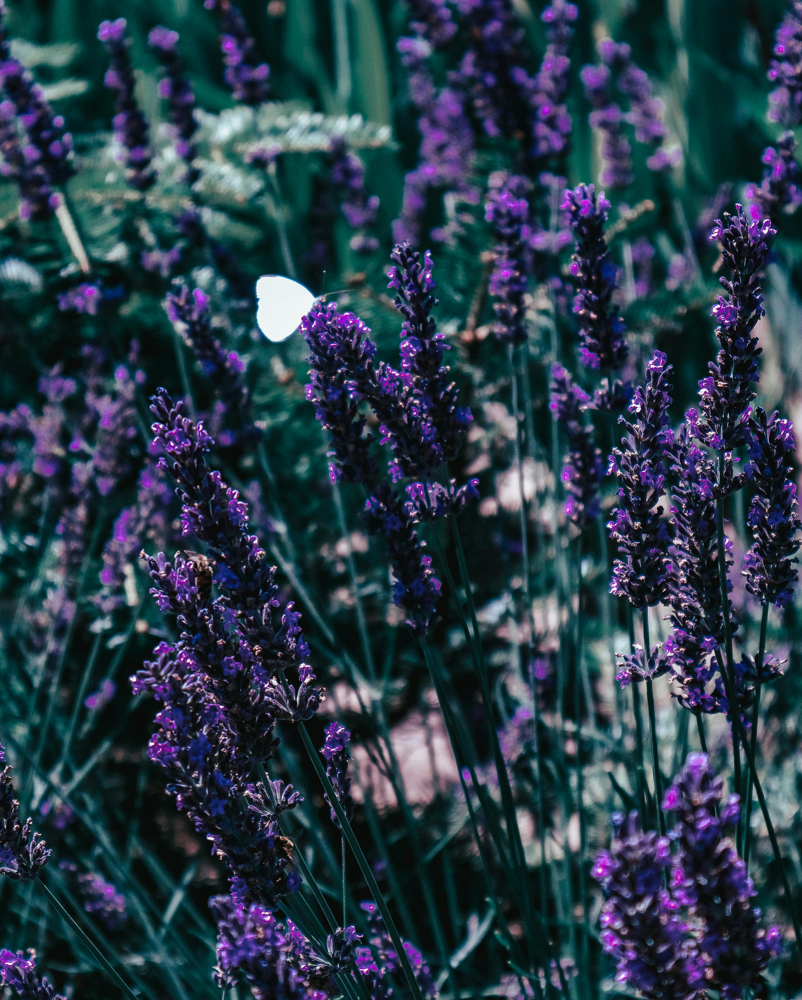
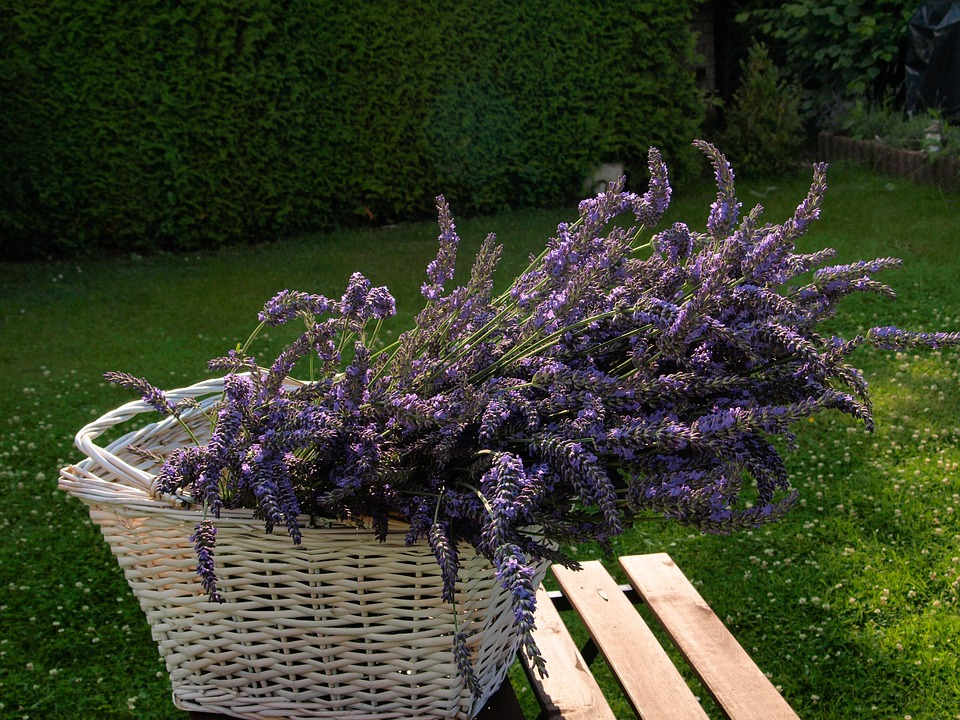

La lavanda es una planta aromática perteneciente al género Lavandula, originaria de la región mediterránea. Se caracteriza por sus hermosas flores de color morado y su aroma suave y relajante.


Para dormir mejor: Se usa porque su aroma favorece el sueño profundo y reduce el insomnio. Sirve para descansar mejor y despertar con más energía. Puedes poner unas gotas de aceite de lavanda en tu almohada o usarla en un difusor.
Cuidado de la piel: Se usa porque tiene propiedades antibacterianas y calmantes. Sirve para tratar irritaciones, acné o pequeñas heridas. Puedes aplicar aceite diluido sobre la piel o usar cremas con lavanda.
Repelente natural: Se usa porque su olor ahuyenta insectos como mosquitos. Sirve para protegerte de picaduras sin químicos fuertes. Puedes colocar bolsitas de lavanda o usar aceite en la piel o en el ambiente.
Aromatizante natural: Se usa porque tiene un aroma fresco y agradable. Sirve para perfumar espacios de forma natural. Puedes poner flores secas en la habitación o usar un difusor con aceite esencial.
Uso espiritual: Se usa porque se asocia con limpieza energética y paz interior. Sirve para meditar, relajarte y sentir equilibrio. Puedes usarla en sahumerios, baños o durante meditaciones.
En infusión (té):Se usa porque tiene efectos relajantes y digestivos. Sirve para calmar nervios y mejorar la digestión. Para hacerlo, hierve agua y agrega flores de lavanda, deja reposar unos minutos y bebe.